Extract or compute hindcasts and forecasts for a fitted mvgam object
Source: R/forecast.mvgam.R
forecast.mvgam.RdExtract or compute hindcasts and forecasts for a fitted
mvgam object
Usage
# S3 method for mvgam
forecast(object, newdata, data_test, n_cores = 1, type = "response", ...)Arguments
- object
listobject of classmvgamorjsdgam. Seemvgam()- newdata
Optional
dataframeorlistof test data containing the same variables that were included in the originaldataused to fit the model. If included, the covariate information innewdatawill be used to generate forecasts from the fitted model equations. If this samenewdatawas originally included in the call tomvgam, then forecasts have already been produced by the generative model and these will simply be extracted and plotted. However if nonewdatawas supplied to the original model call, an assumption is made that thenewdatasupplied here comes sequentially after the data supplied in the original model (i.e. we assume there is no time gap between the last observation of series 1 in the original data and the first observation for series 1 innewdata)- data_test
Deprecated. Still works in place of
newdatabut users are recommended to usenewdatainstead for more seamless integration intoRworkflows- n_cores
Deprecated. Parallel processing is no longer supported
- type
When this has the value
link(default) the linear predictor is calculated on the link scale. Ifexpectedis used, predictions reflect the expectation of the response (the mean) but ignore uncertainty in the observation process. Whenresponseis used, the predictions take uncertainty in the observation process into account to return predictions on the outcome scale. Whenvarianceis used, the variance of the response with respect to the mean (mean-variance relationship) is returned. Whentype = "terms", each component of the linear predictor is returned separately in the form of alist(possibly with standard errors, ifsummary = TRUE): this includes parametric model components, followed by each smooth component, but excludes any offset and any intercept. Two special cases are also allowed: typelatent_Nwill return the estimated latent abundances from an N-mixture distribution, while typedetectionwill return the estimated detection probability from an N-mixture distribution- ...
Ignored
Value
An object of class mvgam_forecast containing hindcast and
forecast distributions. See mvgam_forecast-class for
details.
Details
Posterior predictions are drawn from the fitted mvgam and
used to simulate a forecast distribution
Examples
# \donttest{
# Simulate data with 3 series and AR trend model
simdat <- sim_mvgam(n_series = 3, trend_model = AR())
# Fit mvgam model
mod <- mvgam(
y ~ s(season, bs = 'cc', k = 6),
trend_model = AR(),
noncentred = TRUE,
data = simdat$data_train,
chains = 2,
silent = 2
)
# Hindcasts on response scale
hc <- hindcast(mod)
str(hc)
#> List of 15
#> $ call :Class 'formula' language y ~ s(season, bs = "cc", k = 6)
#> .. ..- attr(*, ".Environment")=<environment: 0x55702bdded60>
#> $ trend_call : NULL
#> $ family : chr "poisson"
#> $ trend_model :List of 7
#> ..$ trend_model: chr "AR1"
#> ..$ ma : logi FALSE
#> ..$ cor : logi FALSE
#> ..$ unit : chr "time"
#> ..$ gr : chr "NA"
#> ..$ subgr : chr "series"
#> ..$ label : language AR()
#> ..- attr(*, "class")= chr "mvgam_trend"
#> ..- attr(*, "param_info")=List of 2
#> .. ..$ param_names: chr [1:8] "trend" "tau" "sigma" "ar1" ...
#> .. ..$ labels : chr [1:8] "trend_estimates" "precision_parameter" "standard_deviation" "autoregressive_coef_1" ...
#> $ drift : logi FALSE
#> $ use_lv : logi FALSE
#> $ fit_engine : chr "stan"
#> $ type : chr "response"
#> $ series_names : chr [1:3] "series_1" "series_2" "series_3"
#> $ train_observations:List of 3
#> ..$ series_1: int [1:75] 3 6 5 3 1 0 0 1 1 0 ...
#> ..$ series_2: int [1:75] 3 8 5 3 4 2 0 2 0 0 ...
#> ..$ series_3: int [1:75] 5 3 1 2 3 2 0 1 0 0 ...
#> $ train_times :List of 3
#> ..$ series_1: int [1:75] 1 2 3 4 5 6 7 8 9 10 ...
#> ..$ series_2: int [1:75] 1 2 3 4 5 6 7 8 9 10 ...
#> ..$ series_3: int [1:75] 1 2 3 4 5 6 7 8 9 10 ...
#> $ test_observations : NULL
#> $ test_times : NULL
#> $ hindcasts :List of 3
#> ..$ series_1: num [1:1000, 1:75] 2 1 4 2 3 3 2 1 0 0 ...
#> .. ..- attr(*, "dimnames")=List of 2
#> .. .. ..$ : NULL
#> .. .. ..$ : chr [1:75] "ypred[1,1]" "ypred[2,1]" "ypred[3,1]" "ypred[4,1]" ...
#> ..$ series_2: num [1:1000, 1:75] 0 0 0 4 4 1 4 1 3 0 ...
#> .. ..- attr(*, "dimnames")=List of 2
#> .. .. ..$ : NULL
#> .. .. ..$ : chr [1:75] "ypred[1,2]" "ypred[2,2]" "ypred[3,2]" "ypred[4,2]" ...
#> ..$ series_3: num [1:1000, 1:75] 0 2 0 1 2 2 1 4 0 3 ...
#> .. ..- attr(*, "dimnames")=List of 2
#> .. .. ..$ : NULL
#> .. .. ..$ : chr [1:75] "ypred[1,3]" "ypred[2,3]" "ypred[3,3]" "ypred[4,3]" ...
#> $ forecasts : NULL
#> - attr(*, "class")= chr "mvgam_forecast"
# Use summary() to extract hindcasts / forecasts for custom plotting
head(summary(hc), 12)
#> # A tibble: 12 × 7
#> series time predQ50 predQ2.5 predQ97.5 truth type
#> <fct> <int> <dbl> <dbl> <dbl> <int> <chr>
#> 1 series_1 1 2 0 6 3 response
#> 2 series_1 2 4 1 9 6 response
#> 3 series_1 3 5 1 10 5 response
#> 4 series_1 4 4 1 9 3 response
#> 5 series_1 5 2 0 6 1 response
#> 6 series_1 6 1 0 4 0 response
#> 7 series_1 7 1 0 3 0 response
#> 8 series_1 8 1 0 3 1 response
#> 9 series_1 9 1 0 3 1 response
#> 10 series_1 10 1 0 3 0 response
#> 11 series_1 11 1 0 4 0 response
#> 12 series_1 12 2 0 6 5 response
# Or just use the plot() function for quick plots
plot(hc, series = 1)
#> No non-missing values in test_observations; cannot calculate forecast score
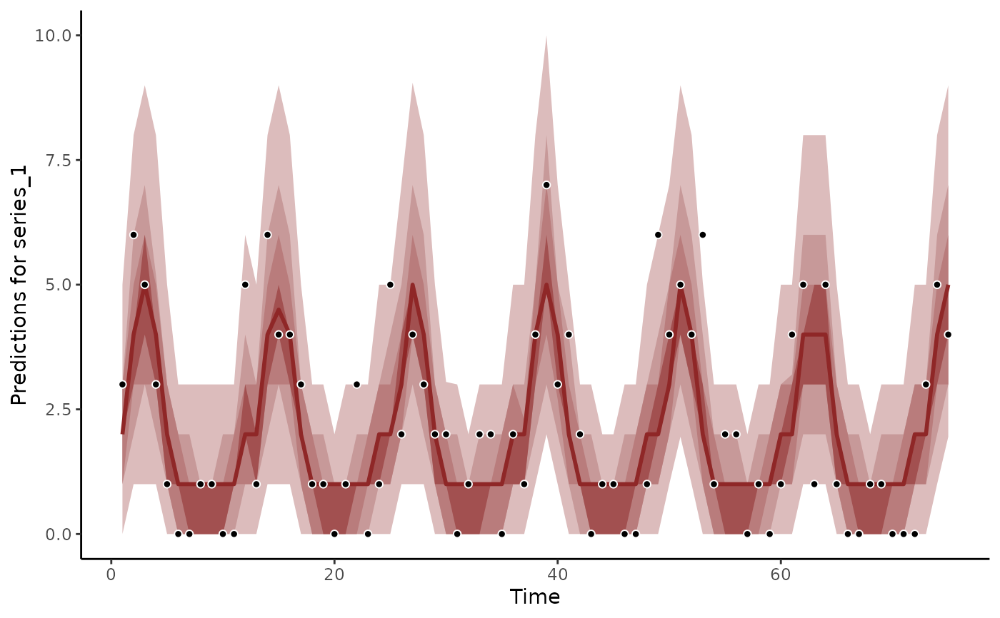
plot(hc, series = 2)
#> No non-missing values in test_observations; cannot calculate forecast score
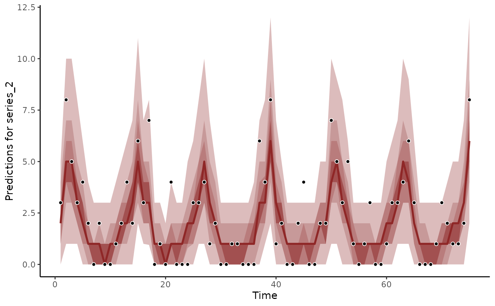
plot(hc, series = 3)
#> No non-missing values in test_observations; cannot calculate forecast score
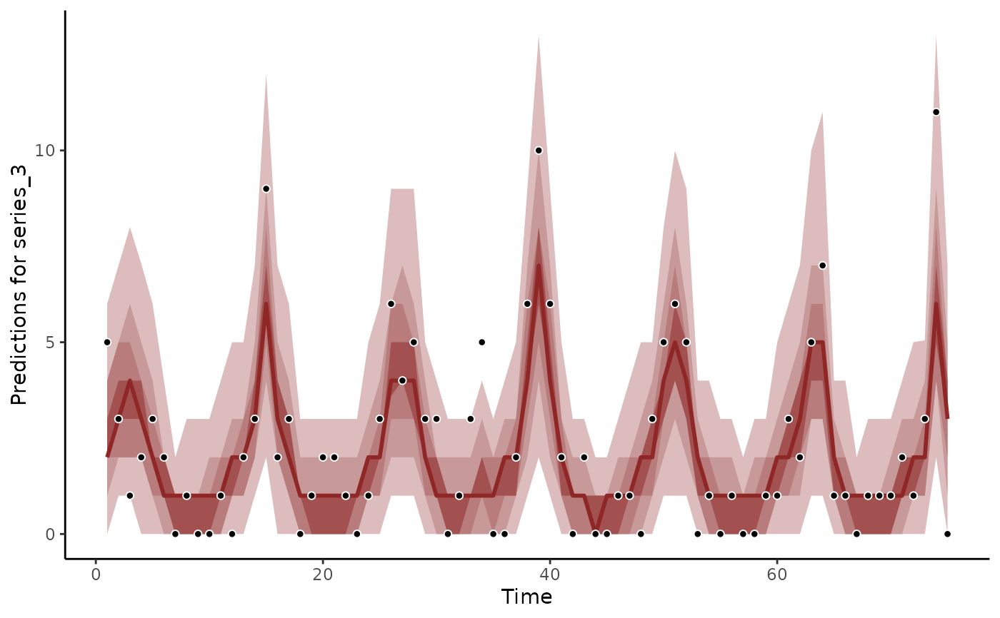
# Forecasts on response scale
fc <- forecast(
mod,
newdata = simdat$data_test
)
str(fc)
#> List of 16
#> $ call :Class 'formula' language y ~ s(season, bs = "cc", k = 6)
#> .. ..- attr(*, ".Environment")=<environment: 0x55702bdded60>
#> $ trend_call : NULL
#> $ family : chr "poisson"
#> $ family_pars : NULL
#> $ trend_model :List of 7
#> ..$ trend_model: chr "AR1"
#> ..$ ma : logi FALSE
#> ..$ cor : logi FALSE
#> ..$ unit : chr "time"
#> ..$ gr : chr "NA"
#> ..$ subgr : chr "series"
#> ..$ label : language AR()
#> ..- attr(*, "class")= chr "mvgam_trend"
#> ..- attr(*, "param_info")=List of 2
#> .. ..$ param_names: chr [1:8] "trend" "tau" "sigma" "ar1" ...
#> .. ..$ labels : chr [1:8] "trend_estimates" "precision_parameter" "standard_deviation" "autoregressive_coef_1" ...
#> $ drift : logi FALSE
#> $ use_lv : logi FALSE
#> $ fit_engine : chr "stan"
#> $ type : chr "response"
#> $ series_names : Factor w/ 3 levels "series_1","series_2",..: 1 2 3
#> $ train_observations:List of 3
#> ..$ series_1: int [1:75] 3 6 5 3 1 0 0 1 1 0 ...
#> ..$ series_2: int [1:75] 3 8 5 3 4 2 0 2 0 0 ...
#> ..$ series_3: int [1:75] 5 3 1 2 3 2 0 1 0 0 ...
#> $ train_times :List of 3
#> ..$ series_1: int [1:75] 1 2 3 4 5 6 7 8 9 10 ...
#> ..$ series_2: int [1:75] 1 2 3 4 5 6 7 8 9 10 ...
#> ..$ series_3: int [1:75] 1 2 3 4 5 6 7 8 9 10 ...
#> $ test_observations :List of 3
#> ..$ series_1: int [1:25] 3 5 2 1 0 2 2 0 3 3 ...
#> ..$ series_2: int [1:25] 2 2 1 1 0 0 0 0 0 0 ...
#> ..$ series_3: int [1:25] 9 2 0 0 0 0 1 1 1 3 ...
#> $ test_times :List of 3
#> ..$ series_1: int [1:25] 76 77 78 79 80 81 82 83 84 85 ...
#> ..$ series_2: int [1:25] 76 77 78 79 80 81 82 83 84 85 ...
#> ..$ series_3: int [1:25] 76 77 78 79 80 81 82 83 84 85 ...
#> $ hindcasts :List of 3
#> ..$ series_1: num [1:1000, 1:75] 2 1 4 2 3 3 2 1 0 0 ...
#> .. ..- attr(*, "dimnames")=List of 2
#> .. .. ..$ : NULL
#> .. .. ..$ : chr [1:75] "ypred[1,1]" "ypred[2,1]" "ypred[3,1]" "ypred[4,1]" ...
#> ..$ series_2: num [1:1000, 1:75] 0 0 0 4 4 1 4 1 3 0 ...
#> .. ..- attr(*, "dimnames")=List of 2
#> .. .. ..$ : NULL
#> .. .. ..$ : chr [1:75] "ypred[1,2]" "ypred[2,2]" "ypred[3,2]" "ypred[4,2]" ...
#> ..$ series_3: num [1:1000, 1:75] 0 2 0 1 2 2 1 4 0 3 ...
#> .. ..- attr(*, "dimnames")=List of 2
#> .. .. ..$ : NULL
#> .. .. ..$ : chr [1:75] "ypred[1,3]" "ypred[2,3]" "ypred[3,3]" "ypred[4,3]" ...
#> $ forecasts :List of 3
#> ..$ series_1: int [1:1000, 1:25] 3 5 2 3 6 6 5 3 0 5 ...
#> ..$ series_2: int [1:1000, 1:25] 4 1 12 4 0 6 2 3 2 4 ...
#> ..$ series_3: int [1:1000, 1:25] 3 8 0 9 8 5 3 4 4 6 ...
#> - attr(*, "class")= chr "mvgam_forecast"
head(summary(fc), 12)
#> # A tibble: 12 × 7
#> series time predQ50 predQ2.5 predQ97.5 truth type
#> <fct> <int> <dbl> <dbl> <dbl> <int> <chr>
#> 1 series_1 1 2 0 6 3 response
#> 2 series_1 2 4 1 9 6 response
#> 3 series_1 3 5 1 10 5 response
#> 4 series_1 4 4 1 9 3 response
#> 5 series_1 5 2 0 6 1 response
#> 6 series_1 6 1 0 4 0 response
#> 7 series_1 7 1 0 3 0 response
#> 8 series_1 8 1 0 3 1 response
#> 9 series_1 9 1 0 3 1 response
#> 10 series_1 10 1 0 3 0 response
#> 11 series_1 11 1 0 4 0 response
#> 12 series_1 12 2 0 6 5 response
plot(fc, series = 1)
#> Out of sample DRPS:
#> 23.901977
plot(fc, series = 2)
#> Out of sample DRPS:
#> 19.011411
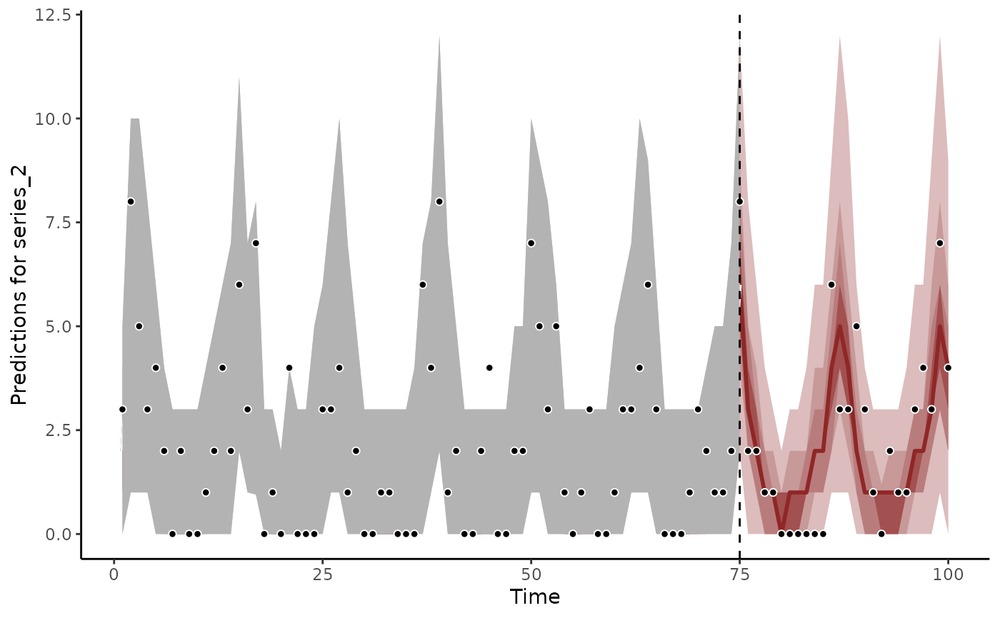
plot(fc, series = 3)
#> Out of sample DRPS:
#> 21.173195
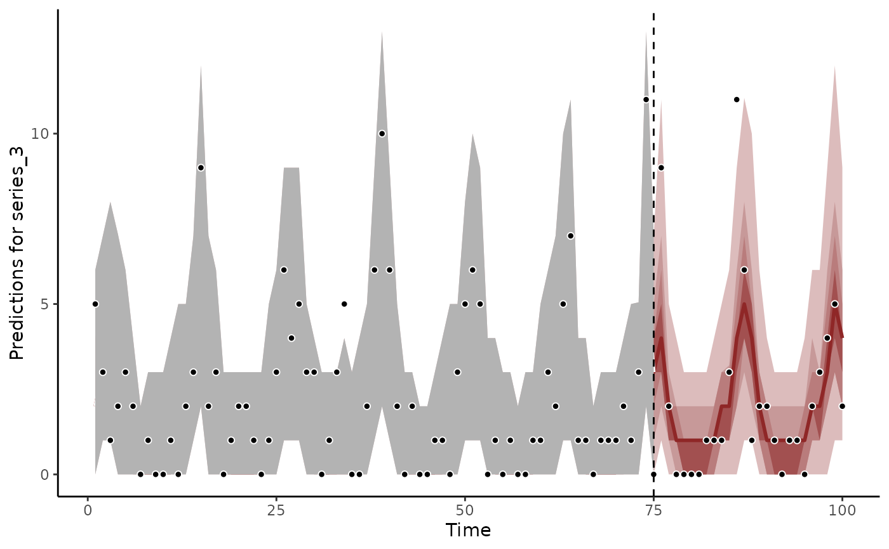
# Forecasts as expectations
fc <- forecast(
mod,
newdata = simdat$data_test,
type = 'expected'
)
head(summary(fc), 12)
#> # A tibble: 12 × 6
#> series time predQ50 predQ2.5 predQ97.5 type
#> <fct> <int> <dbl> <dbl> <dbl> <chr>
#> 1 series_1 1 2.09 1.39 3.16 expected
#> 2 series_1 2 3.92 2.62 6.26 expected
#> 3 series_1 3 5.01 3.30 7.52 expected
#> 4 series_1 4 3.77 2.48 5.52 expected
#> 5 series_1 5 1.99 1.20 2.96 expected
#> 6 series_1 6 1.13 0.663 1.81 expected
#> 7 series_1 7 0.835 0.474 1.36 expected
#> 8 series_1 8 0.764 0.429 1.31 expected
#> 9 series_1 9 0.763 0.456 1.30 expected
#> 10 series_1 10 0.857 0.483 1.45 expected
#> 11 series_1 11 1.20 0.707 1.86 expected
#> 12 series_1 12 2.28 1.53 3.75 expected
plot(fc, series = 1)
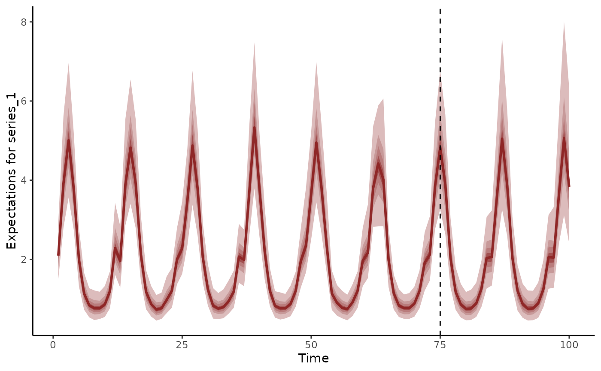
plot(fc, series = 2)
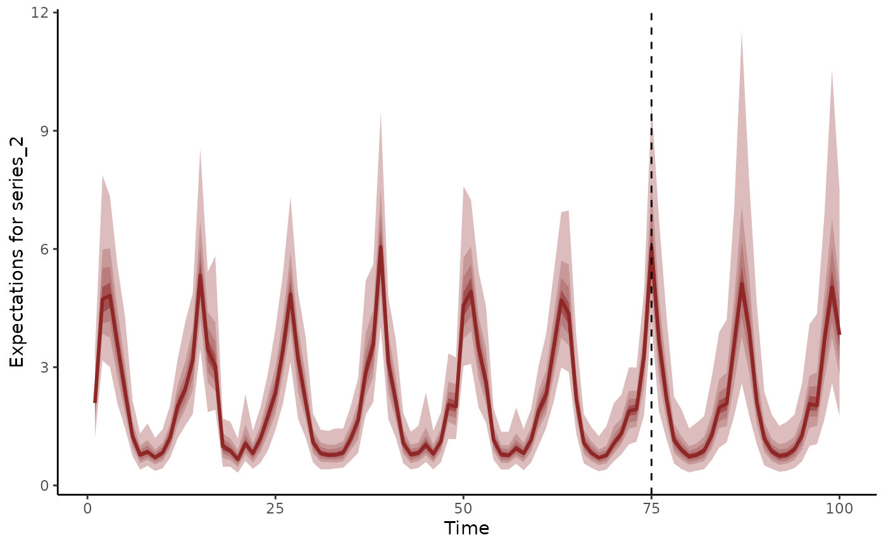
plot(fc, series = 3)
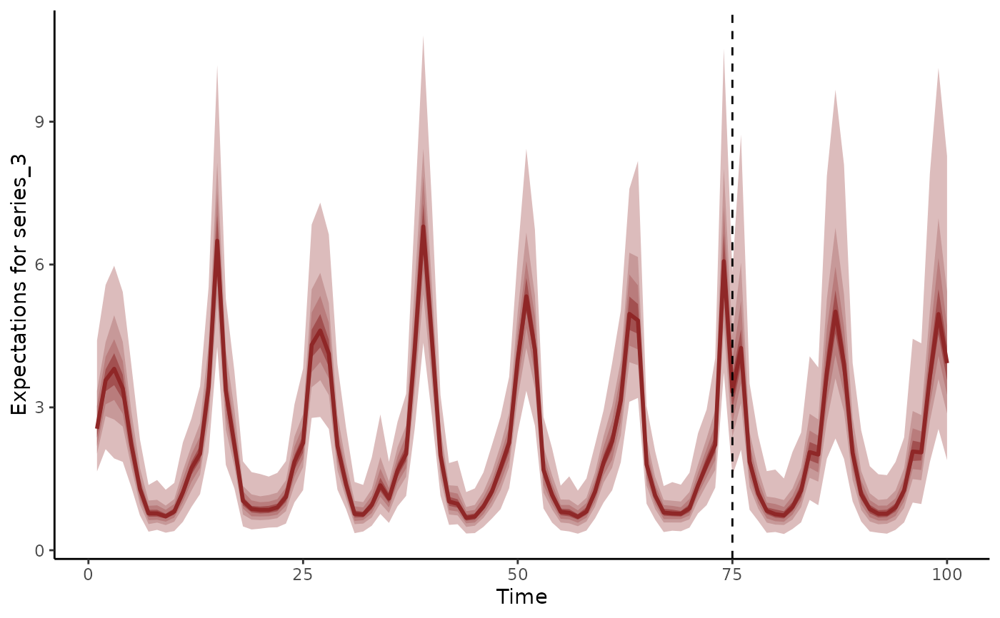
# Dynamic trend extrapolations
fc <- forecast(
mod,
newdata = simdat$data_test,
type = 'trend'
)
head(summary(fc), 12)
#> # A tibble: 12 × 6
#> series time predQ50 predQ2.5 predQ97.5 type
#> <fct> <int> <dbl> <dbl> <dbl> <chr>
#> 1 series_1 1 0.0137 -0.352 0.415 trend
#> 2 series_1 2 0.0667 -0.316 0.530 trend
#> 3 series_1 3 -0.00734 -0.426 0.373 trend
#> 4 series_1 4 -0.0284 -0.426 0.339 trend
#> 5 series_1 5 -0.0324 -0.490 0.338 trend
#> 6 series_1 6 -0.0429 -0.531 0.401 trend
#> 7 series_1 7 -0.0168 -0.497 0.379 trend
#> 8 series_1 8 0.0159 -0.416 0.479 trend
#> 9 series_1 9 0.0113 -0.435 0.451 trend
#> 10 series_1 10 -0.0295 -0.573 0.399 trend
#> 11 series_1 11 -0.0442 -0.524 0.366 trend
#> 12 series_1 12 0.105 -0.248 0.593 trend
plot(fc, series = 1)
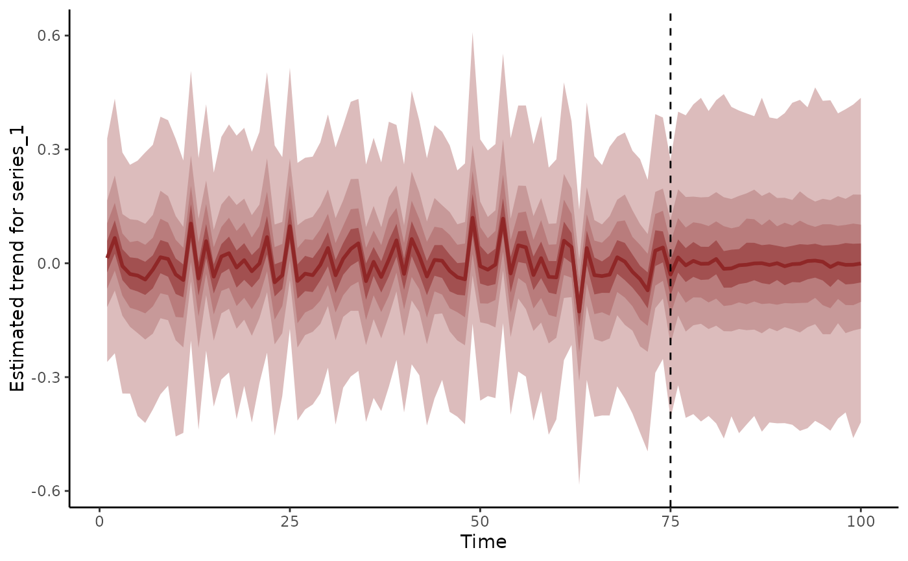
plot(fc, series = 2)
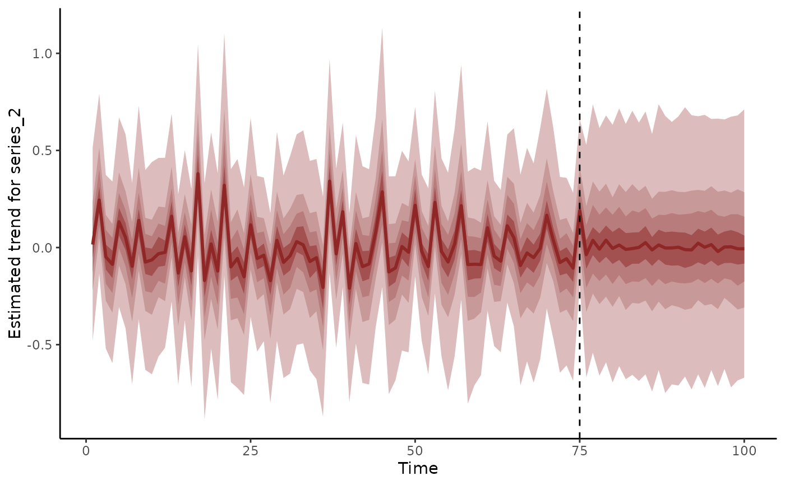
plot(fc, series = 3)
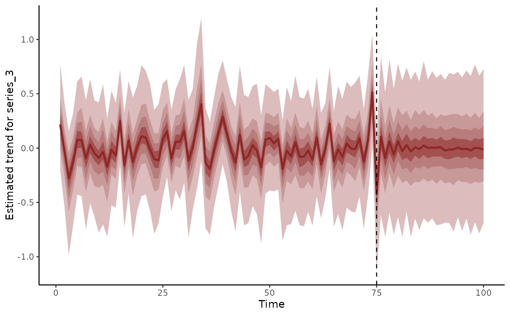
# }